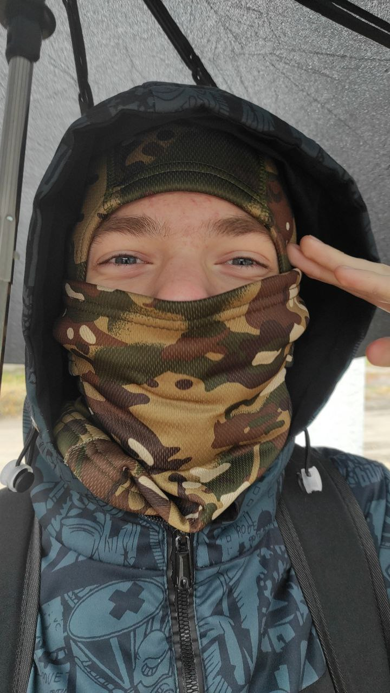
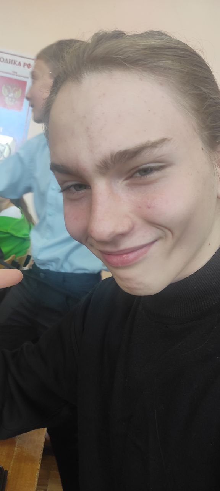

Приветствуем всех на Plovchik Fm, официальном, интернет-радио вещании PlovDev.
'' Слушайте эфиры, наслаждайтесь любимыми песнями, участвуйте в обсуждении различных тем, и все это на PlovchikFm
Ведущие на Plovchik Fm:
Мистер Плов
— главный ведущий PlovchikFm
Основал данную радио станцию. Сделал много крутых проектов.
Более 1 месяца в эфире, крутой и !уверенный в себе чувак.
Более 1 месяца в эфире, крутой и !уверенный в себе чувак.

Вантуз
— сооснователь, и ведущий радио.
Отвественный за работу PlovchikFm как сервиса.
Опытный ведущий с 2‑х недельным стажем. Качественная и понятная речь - его идеализм.
Опытный ведущий с 2‑х недельным стажем. Качественная и понятная речь - его идеализм.

Доктор ЧМА
— лучший эксперт и СММ менеджер PlovDev.
Звукорежисер, автор целых эфиров и обсуждений.
Лично состоит в PlovDev и сливает всю важную инфу в эфир.
Лично состоит в PlovDev и сливает всю важную инфу в эфир.
Live-календарь
Эфиры каждый вечер с 18:00 до 19:00!
Возможно экстренное включение:)
Плейлисты на каждый день из любимых песен — всё остальное время.
Что играется?
Песни различных групп:
- Кино
- Король и Шут
- Ария
- И другие
Live эфиры с обсуждением различных тематик:
- IT
- Музыка
- Просто болтаем
- Обсуждаем со слушателями